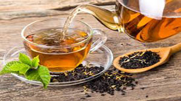
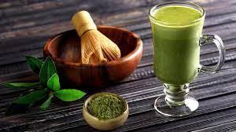
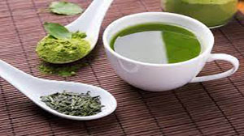
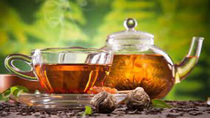
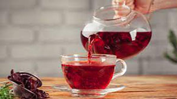
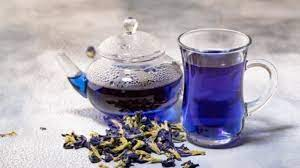

Información sobre el Té
En este espacio queremos compartir información básica para
introducirte en el mundo del té.
¿Qué es el té?
El té es la infusión de hojas y brotes de la planta llamada
Camellia Sinensis. Existen distintos tipos de té que provienen todos
de la misma planta pero su diferencia radica en el tratamiento que
se le aplican a las hojas durante el proceso de elaboración. Esto
influye tanto en el color, sabor, aroma, textura y propiedades de
cada té.
Tés de origen y blends
Los tés de origen o puros son los que no tienen ningún agregado.
Algunos se conocen por el nombre de la región o área determinada del
lugar de producción (Darjeeling o Assam) o por algún nombre de
fantasía.
En cambio los blends de té son mezclas de distintos tipos o
variedades de tés de origen o mezclas de té con otros ingredientes:
frutas, especias, esencias y flores que combinadas le dan un aroma y
un sabor particular a cada infusión.
Variedades de Té
El té está de moda. En los últimos años el consumo de esta infusión ha
crecido exponencialmente hasta gozar de una popularidad inmensa en todo
el mundo. La razón principal de esta moda es que el té se asocia a buena
salud. Sus antioxidantes tienen un efecto muy positivo sobre nuestro
organismo y todas las variedades aportan beneficios para mantener un
buen estado de salud. Prácticamente todos los tipos de té aportan
beneficios diversos. En función de lo que necesitemos, podemos elegir el
té más adecuado.
Te Negro

El té negro provoca efectos parecidos a los del café, aunque es más
saludable. Se trata de una bebida que aporta energía y que expande la
cafeína a gran velocidad en la sangre sin causar perjuicio al corazón.
Este tipo de té ayuda a rebajar el nivel de colesterol y contribuye a
controlar el nivel de estrés. También tiene efectos adelgazantes porque
ayuda a la quema de grasas.
Te Matcha

El té matcha, englobado en la categoría de tés verdes, es realmente
beneficioso. Tiene efectos adelgazantes y ayuda a controlar el estrés y
a dotar de cierta relajación a nuestro organismo. Esto se debe a una
sustancia (L-teanina) que incentiva el relax y evitando provocar un
aumento de azúcar en sangre. Aporta energía y sirve para evitar el
estreñimiento. También provoca efectos que fortalecen el sistema
inmunológico y no causa somnolencia.
Te Verde

Es el té por excelencia y probablemente el que más se consume. Tiene,
como todos, propiedades antioxidantes y tiene poca cafeína. Estos
antioxidantes cooperan para la prevención del cáncer y de enfermedades
neurológicas como el Parkinson o el Alzheimer. Como todos los tés, tiene
propiedades que permiten controlar el nivel de colesterol. El efecto más
publicitado de los que provoca el té verde es el de mejorar el estado
cerebral y fortalecer la capacidad de memoria. Además, también ayuda a
conseguir concentración.
Te Blanco

El té blanco se caracteriza por tener un alto índice de polifenoles, muy
superior al del resto de los tipos de té y por tener un nivel de cafeína
menor. Esto se traduce en una gran capacidad antioxidante y en un efecto
positivo para el sistema inmune. Presenta también efectos beneficiosos
para la hidratación y sirve para prevenir el cáncer.
Te Rojo

Todos los tés tienen efectos diuréticos, pero ninguno con el alto nivel
del té rojo. Ayuda a prevenir problemas respiratorios y facilita la
disminución de los niveles de azúcar en sangre. También provoca
importantes efectos de reducción del colesterol y de los triglicéridos.
Ayuda a adelgazar y es positivo para el sistema inmunológico.
Te Azul (Oolong)

El té azul es de los menos consumidos, pese a que ofrece beneficios
claros para la salud. Presenta muy poca presencia de teina y es
especialmente efectivo para adelgazar. Facilita la circulación de la
sangre y es muy digestivo.